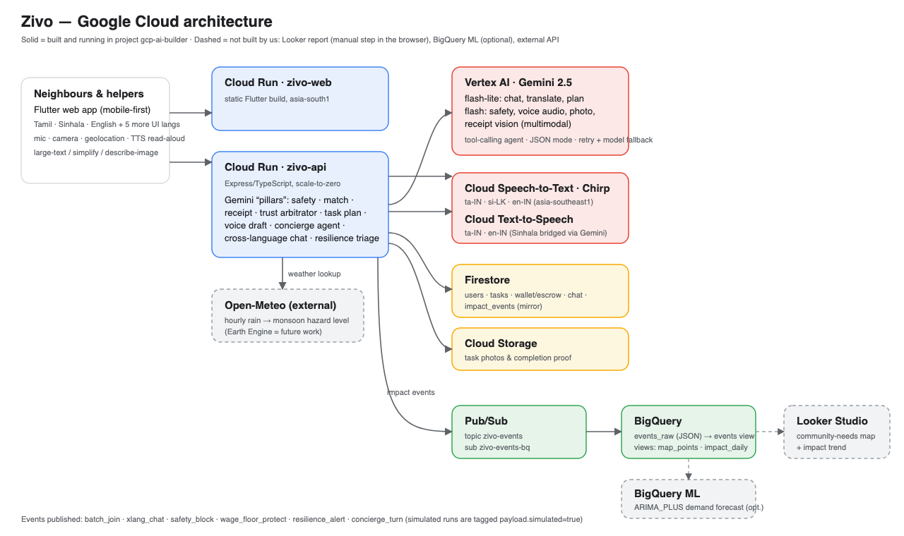
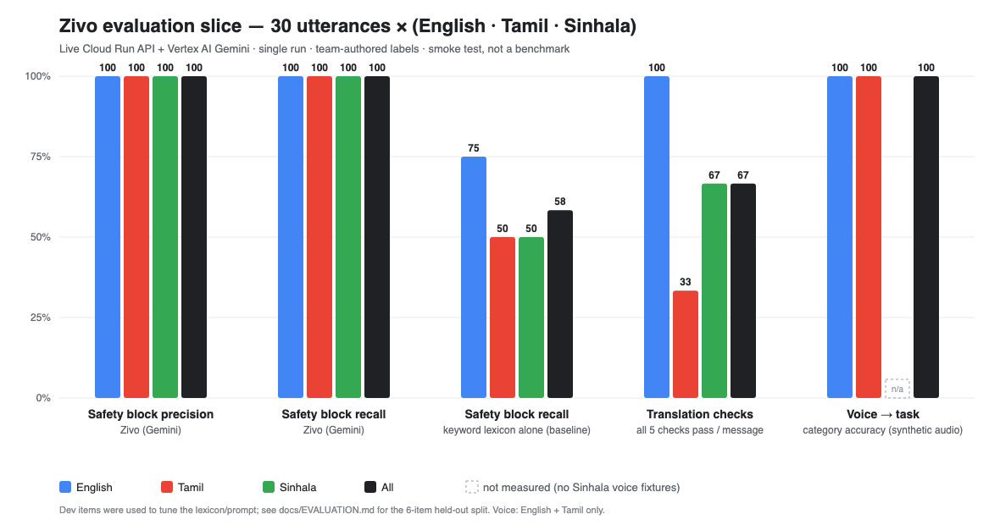

Snapshots of the prototype (live deployment)

Home (client)

“How should Zivo adapt to you?”

Zivo Eyes · Doorstep Talk · Say it
Screenshots of https://zivo-web-ihp5vjzpsa-el.a.run.app11
Google AI Builder Cup 2026 · Submission
a. Team name: ________________________
b. Team leader name: ________________________
c. Problem statement: Sustainability & Social Impact — Accessibility (secondary: Social Good)
Solution: Zivo — neighbourhood care that speaks your language, and gives disabled neighbours work
Yellow rows = fill before you export / submit.
Problem. In Sri Lanka, elders who speak only Tamil or Sinhala, and disabled neighbours, are skipped by gig and care apps: English-only, fast typing, cash in a stranger's hand, and no trusted way to check what a request really means.
Idea. Zivo lets people ask for help by speaking in their own language, and uses Gemini on Vertex AI as the trust-and-safety layer that makes strangers-helping-strangers safe.
The twist. The same AI lets blind, deaf and mobility-impaired neighbours be the helpers and earn — with tools that fit how they work.
Kamala, 74, speaks Tamil → voice → plan (≈4 s) → safety → escrow (or Instant Dispatch on her block) → Nuwan (blind) + Access note → adapted brief + Zivo Eyes → chat on-platform (phones blocked) → Start/End OTP. Neighbours can Street Batch onto the same trip for less CO₂e.
Context: WHO estimates ~1.3 billion people (~16 %) live with a significant disability. We do not claim sign-language translation — no Sri Lankan Sign Language model exists; we solve what Deaf helpers actually lack: understanding speech at the door.
access_fairness)Borella lane, Colombo. Kamala needs milk powder and can’t climb stairs. Rain is building.
batch_join → trips saved → CO₂e in BigQuery.Alternate path: post → match rank → Access note → adapted brief → Eyes / Doorstep → Start OTP → End OTP (Gemini never moves money).

Flutter web on Cloud Run · API on Cloud Run · Gemini 2.5 on Vertex AI via the Google Gen AI SDK, routed over 4 regions with failover · Firestore · Cloud Storage · Pub/Sub → BigQuery · Cloud STT/TTS
| Layer | Technology |
|---|---|
| Generative AI | Gemini 2.5 Flash and Flash-Lite on Vertex AI through @google/genai: audio, vision, function calling, JSON output; thinking off on hot paths; model race + multi-region failover |
| Speech | Cloud Speech-to-Text (Chirp), Cloud Text-to-Speech |
| Hosting | Cloud Run (web + API), scale-to-zero, max-instances cap; Cloud Build + Artifact Registry |
| Data | Firestore, Cloud Storage (signed URLs) |
| Analytics | Pub/Sub → BigQuery (zivo_impact), 1 km grid privacy, access_fairness; Looker Studio optional |
| Client | Flutter (web + mobile), BLoC, three-language UI, 200 % text tested |
| External | Open-Meteo (rainfall → flood-risk level) |
| Server | Node 22, TypeScript, Express, Zod; deterministic fallbacks beside every model call |
| AI action | Est. cost |
|---|---|
| Voice → plan (10 s audio) | ≈ US$0.002 |
| Zivo Eyes (1 photo) | ≈ US$0.001 |
| Doorstep Talk (5 s audio) | ≈ US$0.0007 |
| Safety check | ≈ US$0.0004 |
| Concierge turn | ≈ US$0.002–0.004 |
Estimates from list prices and typical token counts — not billing data.

30 hand-written safety items (10 each en/ta/si), live API. Smoke test, not a benchmark.
| Measurement (live) | Result |
|---|---|
| Safety: harmful / benign | 12/12 blocked · 0/18 false alarms (keywords alone 7/12) |
| Voice → plan (Tamil) | ≈ 4–5 s (was ≈ 8 s, two calls) |
| Zivo Eyes / Doorstep Talk | ≈ 2.5–4.5 s / ≈ 1.8–3.7 s |
| Concierge (≈ 9 Gemini calls) | ≈ 10–12 s (was 13–53 s) |
| Live smoke tests | demo 12/12 · lifecycle 11/11 · inclusion 12/12 · chat 8/8 |
| Widget tests / analyzer | 15/15 · 0 errors |
GitHub public repository: ________________________________
Demo video (3 minutes): ________________________________
Final product link: https://zivo-web-ihp5vjzpsa-el.a.run.app
API health: https://zivo-api-ihp5vjzpsa-el.a.run.app/health
Yellow rows = fill after you publish the repo and upload the 3:00 video.
Zivo: help that speaks your language, and work for everyone.